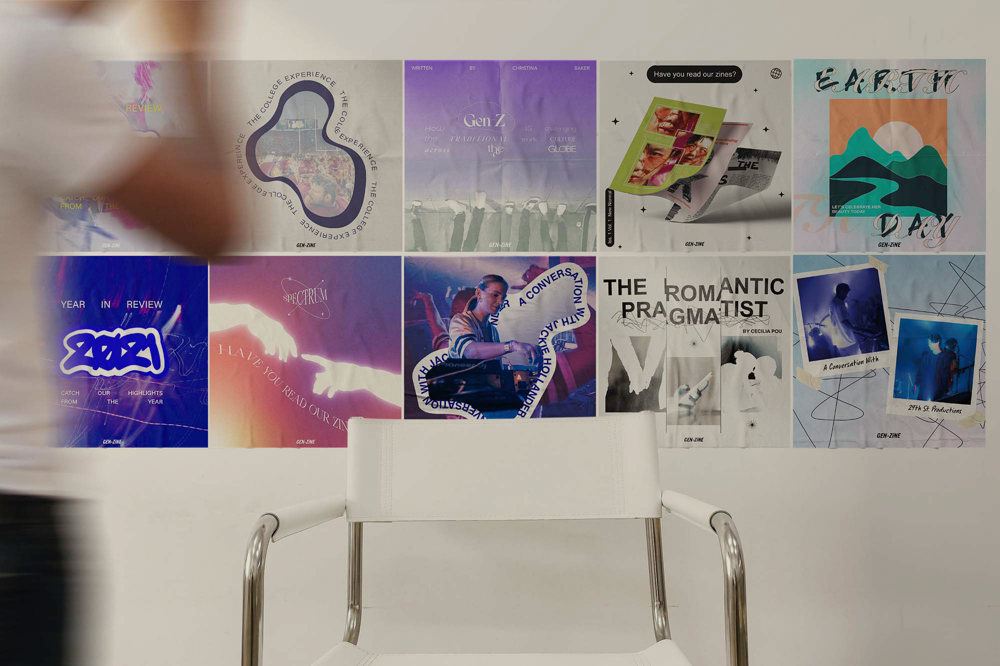
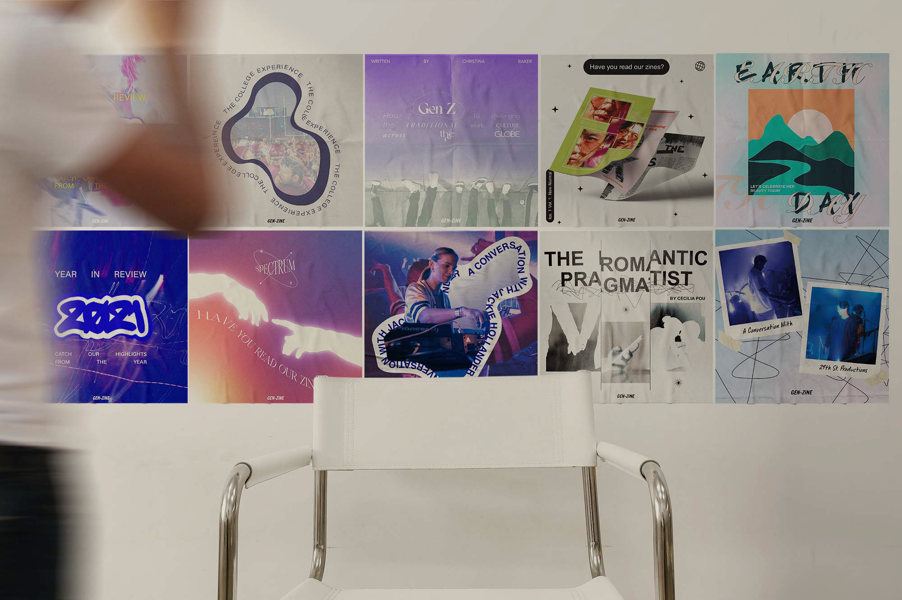

When I became the Creative Director of GEN-ZiNE, I ensured collaboration to ensure brand cohesion and inspire collective creativity.
Before each zine, I had designers pitch color palettes to represent each zine’s theme —spectrum and renaissance. While this part of development is essential to visual cohesion in print design, digital design for our brand did not require a steadfast commitment to one color palette. The color palettes for the zines can be seen above. They were selected by the zine team to represent each respective issue.

Following the color palette selection, each team made moodboards. By engaging in this exercise, the designers were able to form working relationshipsand align their unique vision for each deliverable —of course, while adapting to brand guidelines. This step is critical to ensure visual cohesion.

While rounds of drafts are not fun, I find that they are extremely important in any production process. They align designers with the greater impact of their visual products. This stage of our production processes —both in designing for print and for digital markerting— ensured our visuals represented the brand, its content writing, and the delivery of high-quality final deliverables.


 
